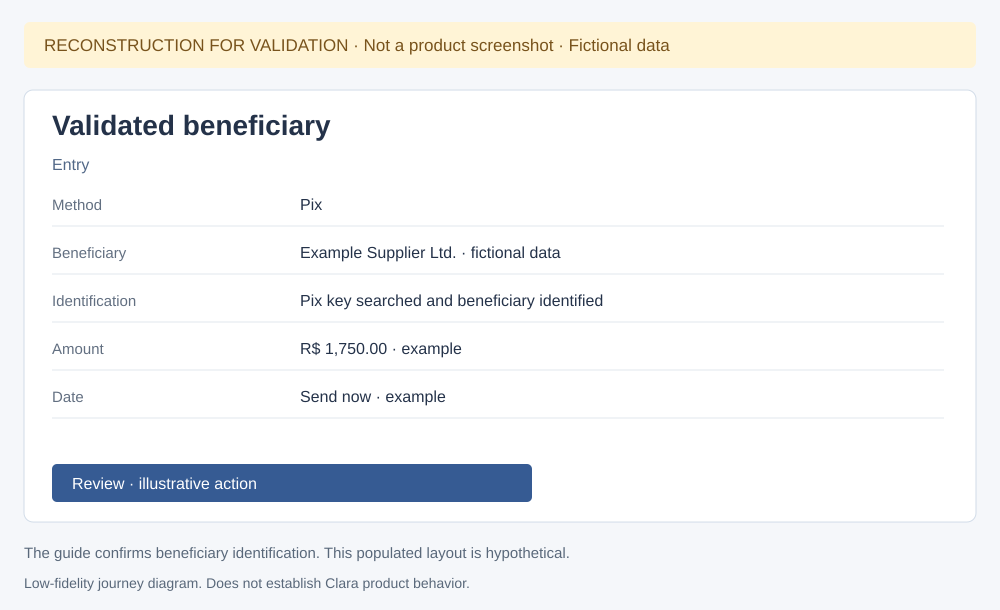
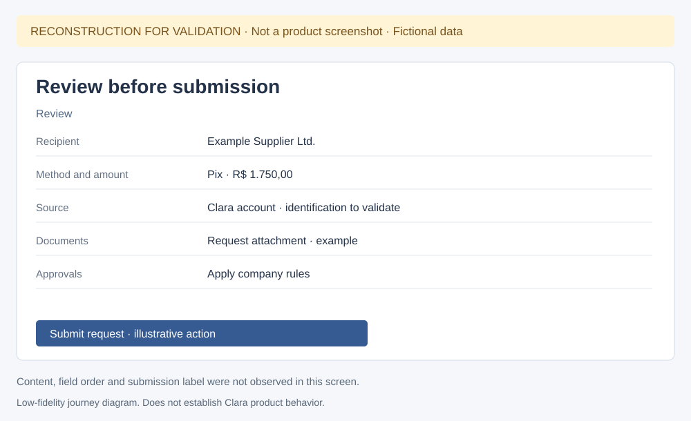
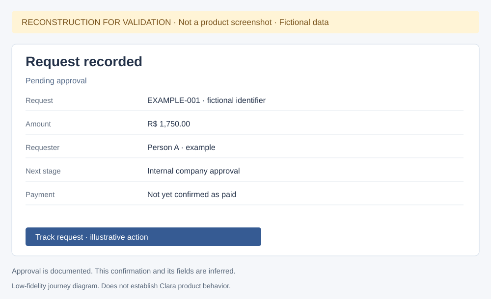
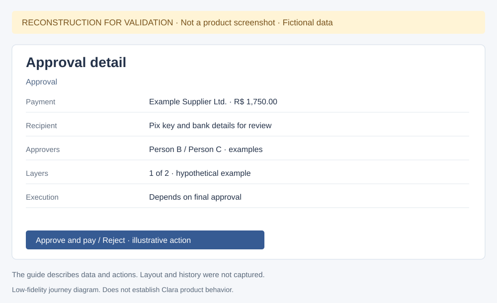
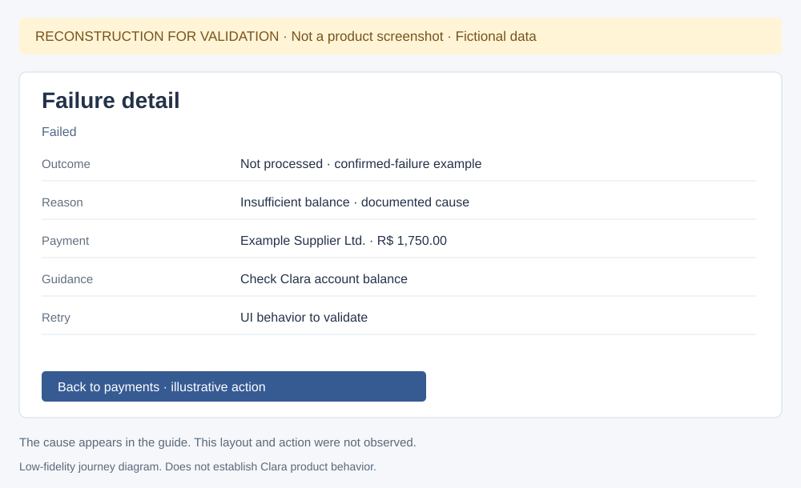
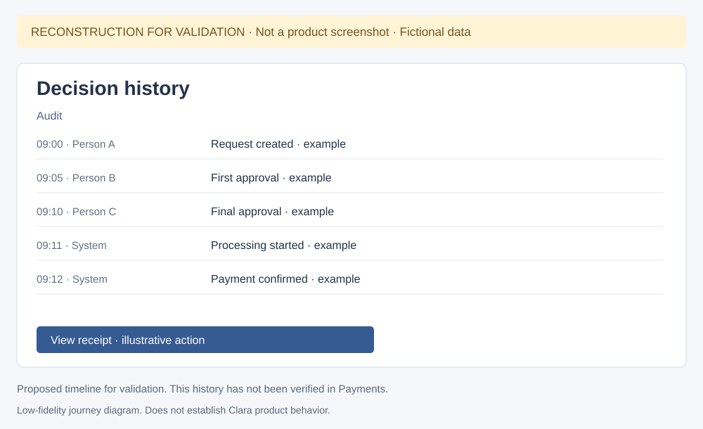

Clara — reconstructed states for validation
I collected these low-fidelity diagrams to investigate states I have not captured yet. Every image is labeled as a reconstruction and uses fictional data. Each structure is hypothetical: it does not reproduce a confirmed interface and does not represent the Open Finance proposal.
Back to documentation and real evidence
Validated beneficiary
Beneficiary identification is documented. The populated layout and example data are inferred.

Review before submission
The real form offers Review. I have not observed the complete summary or funding-source selection.

Request recorded
This confirmation is hypothetical. The real email-code screen does not establish request registration.

Approval detail
The guide describes details, approvers and actions. Layer count, people and layout are examples.

Processing payment
The list and badge are real. The detail, actions and receipt availability are hypotheses.
Failure detail
Insufficient balance is a documented cause. This confirmed-failure example differs from an unknown outcome.

Decision history
The sequence and timestamps are examples. A decision timeline within Payments detail remains unverified.
